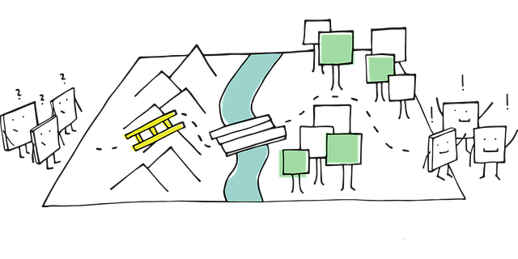

Some users will experience "network obstacles" when using Whonix because some internet service providers (ISPs) in various countries block (censor, prevent) access to the public Tor network. In this instance, Bridges may or may not help in circumventing Tor censorship.
This page describes potential solutions for and the organizational background on network obstacles.
Introduction
Whonix is a research and
implementation project that is based on thousands of freely available
software packages. You can learn more about the organizational structure
 [Broken-ExtLink--no-url-was-provided].
[Broken-ExtLink--no-url-was-provided].
The [Broken-ExtLink--no-url-was-provided] software is used to establish anonymized external connections, but the Whonix project does not maintain Tor. The Tor package itself is also not modified by Whonix.
Further, the reliance of the Whonix platform on Tor does not imply developers are experts about the Tor software or censorship circumvention Bridges.
Reasonable Conclusions
When users experience connectivity issues it is unreasonable to automatically assume the Whonix project is the underlying cause. Nor are Whonix developers experts in resolving various network obstacles. For these reasons, the Troubleshooting page recommends:
In case of connectivity issues: Check if Tor Browser works on the host.
If the Tor Browser Bundle is not functional on the host, then Whonix is unlikely to work either. It is recommended to have a recent Tor Browser Bundle version installed at all times. This way users can test if they live in a censored area or not and whether Tor is blocked by the ISP. Further, if (private) (obfuscated) bridges are necessary for Tor Browser Bundle functionality on the host, then Whonix will similarly require them.
In conclusion, if connectivity issues are experienced with Whonix a sensible first step is to test Tor Browser (TB) functionality on the host. If issues persist on the host then the Tor community should be directly contacted about the issue, since the Whonix platform cannot be the primary source of the problem. In this case it is useful to make a copy of Tor logs to help identify the cause of the problem. [1]
Tor Browser
 Tip.
Tip.
It is recommended to always have the latest [Broken-ExtLink--no-url-was-provided] installed outside of Whonix.
- Non-Qubes-Whonix users: It is recommended to always have TBB installed on the host operating system (OS) or on Debian (preferably) (inside a VM).
- Qubes-Whonix™ users: It is recommended to always have TBB installed in an App Qube based on a non-Whonix Template, i.e. in a Template that is different from Whonix.
Debian 13 (trixie) (preferably) is
recommended, because that is what Whonix is based on. Other Linux based
operating systems such as Fedora might also do.
Refer to the Install Tor Browser (TB) on Debian, Kicksecure or Qubes chapter for TB installation instructions on all platforms. TBB is useful to test whether or not:
- The user lives in a censored area.
- Tor is blocked by the Internet Service Provider (ISP).
- (Private) (obfuscated) bridges will be needed for operation of Tor Browser in Whonix, see Bridges.
If TB fails to properly connect to Tor on the host OS or from a non-Whonix App Qube in Qubes, then Tor Browser inside Whonix will similarly fail to work. Another benefit of installing TB in this fashion is that if Tor Browser unexpectedly stops running in Whonix, then Tor Browser can still be independently used to visit the Whonix website for a solution to this issue.
For better security and privacy, users should read and follow the advice in the Tor Browser chapter.
See Also
Footnotes
- For example, if logs indicate a connection cannot be made to the Tor guard relay, this may suggest the network is censored.